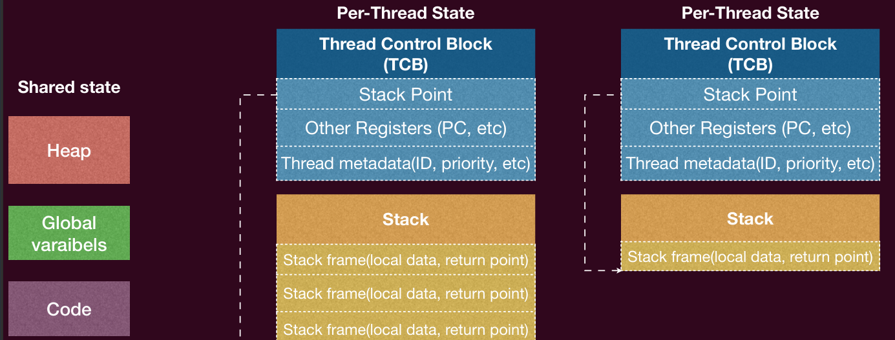
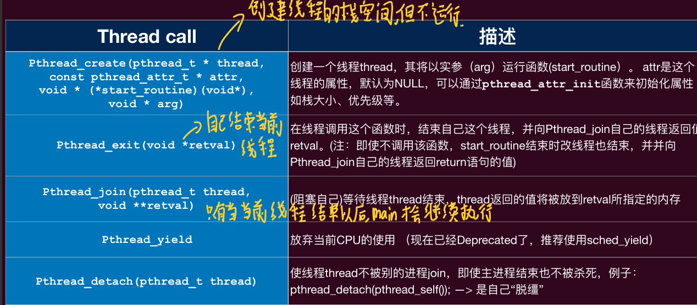
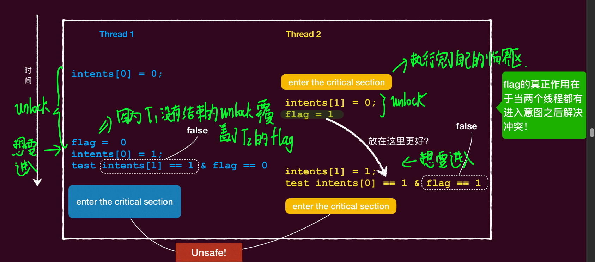
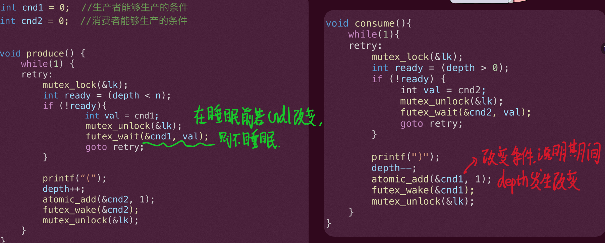

操作系统
操作系统视角
软件视角


操作系统就是syscall的解释器！
硬件角度

两种执行流
-
==普通控制流==(normal control flow)：
‣即遵循冯诺依曼结构的指令循环
-
==异常控制流==(Exceptional Control Flow):
‣不是线性的正常的指令流（PC的转移不受正 常的⾃增、或者branch instrunctions控制）
‣由“外界”强制转移到另⼀块指令⼊⼝（强制 赋予PC）
-⽐如：遇到中断、异常、⾃陷指令时， CPU会转移到另外的指令流⼊⼝
上下文切换


==简⽽⾔之，在硬件眼中，操作系统就是个 C 程序，只是能直接访问计算机硬件==
抽象视角
切换状态机是“分时”操作系统的核⼼
操作系统就是状态机
操作系统
Amdahl 定律:
$Speedup =\frac{1-thread time}{n-thread time}$
或者:
$Speedup=\frac{1}{1-p+\frac{p}{n}}$
原子化的丧失：
- 定义：
- ==All or nothing==：要么一个操作全部做完，要么不做；
- ==Isolation==：一个操作在修改共享变量的时候，不会被其他的操作所打扰；
- 解决方法：互斥-》lock and unlock，使临界区绝对串化，维护队列进入临界区。
顺序性丧失：
- 定义： ==程序语句按照既定的顺序执⾏==
- 解决方法：
- 在程序的代码之间插入barrier： asm volatile (“”:::”memory) 说明告诉编辑器你的优化措施不能够穿越这道墙，即墙前面的代码顺序不会放置在墙后面。
- 使用volatile告诉编辑器这个变量的每一次取值都要从内存中读取。
- 课程推荐的方法:锁 lock
全局一致性的丧失：
-
定义：
- ==SC==(Sequential Consistency)：顺序一致性模型 每一个线程的读写内存的操作都会有一个明确的顺序，即在一个时间片中只会有一个线程去读写内存。（并且在单独看每一个线程时，其每一个读写内存的操作都是按照代码的顺序进行排序的） 也就是说所有的处理器面对着同一个内存，所有处理器的局部处理顺序不变
x86架构的电脑不支持SC模型。因为这个会在性能上面丧失更多。
-
==TSO==(Total Store Ordering)： 只支持不同地址的无依赖的“读读”，“写写”，“读写”顺序的全局可见顺序，并==不会保证“写读”的全局可见顺序==。
当个处理器的局部写读顺序会变。
所以在一个线程中的先写再读的顺序可能会混乱。
-
==Relaxed Memory Model==：宽松内存模型 不保证任何的不同地址的无依赖的访存操作之间的顺序。 可以插入内存屏障：_sync_synchronize(),将宽松内存模型转换为TSO
多线程编程:
线程:
==共享内存的执⾏流==
进程
==拥有独立地址空间的运行实体==

所有的线程共享一个heap,全局变量,代码区;而每一个线程都有自己的TCB(Thread Control Block),还有Stack.当共享的部分发生了改变的时候,线程的状态也改变.

互斥:
实现的尝试
概念：
-
临界区：==访问共享资源的⼀段代码==
-
竞态条件：==多个线程同时进入临界区==,访问并修改共享数据结构,造成不可预见的错误
-
安全性：程序不会出现错误
-
活性：程序终将终止输出正确答案
术语:
- 安全性:不会发生错误->多个线程不会同时访问临界区
- 活性:程序终将会终结->不会发生不可挽回的事情
解决方案:
- 互斥:每次只有一个线程能够进入临界区
- 行进:假如一个线程想要进入临界区,并且临界区没有线程,那么它就会进入
- 有界等待:一个线程等待临界区的时间是有限的
软件实现:
错误的peterson算法:

|
|
错误的地方:
两个unlock可以纠缠在一起导致造成了既没有人想要进入的意图,flag也轮转到了自己

正确的peterson算法:

|
|
flag的作用是==当出现了多个的线程想要进入的时候决定到底哪一个线程可以进入==
正确性的证明:==既证明假如出现了两个线程同时进入了临界区的情况,证明这种情况是不可能出现的.==
然而peterson算法在现代的计算机模型上面是不正确的,因为peterson算法需要满足SC内存顺序一致性模型
硬件实现:
可以使用原子性的操作去完成:
|
|
Ticket Lock

span_lock
|
|
mutex_lock
除了进⼊临界区的线程，其他处理器上的线程都在==空转==
-如果临界区执⾏时间过⻓（⽤户线程的常态），其他线程浪费的CPU越多
-此外，如果发⽣中断将临界区的线程切出去了，计算资源浪费更加严重
==唤醒的丢失==（先进行wakeup然后再进行wait）
错误的实现:

|
|
可能存在唤醒丢失的问题:当在line5判断got不是unlock的时候,可能在另一个线程unlock,启动了唤醒,而后原先的线程才开始进行wait睡眠,此时因为wake已经执行过了,所以这个线程一直在wait,不能够被唤醒.

正确的实现:
mutex_wait是直接进行wait操作
而futex_wait是先进行值的判断再说明是否要进行wait

futex_waithe futex_wake是对于一个地址进行唤醒和睡眠等待。

|
|
very tricky的部分是:因为想要执行到while循环可能是从一众睡眠的线程中取出,此时检测的为Unlock,但是假如在循环判断中将lock设置为One_hold的话,在这个线程解锁的时候,会因为lock为One_hold而没有去唤醒睡眠队列里面的线程,导致唤醒丢失.
ticket_lock
|
|
使用atomic_fetch_add原子指令.
内核中的锁
用户态在获取内核所需要的锁后就关中断(因为在获取所得时候,发生了中断会导致死锁, 而中断处理程序需要获取这个锁).
使用栈堆的方式将在获取锁之前的中断是否打开的状态进行压栈处理
|
|
同步
控制并发之间的关系，保持进程之间的合作
互斥不能够控制线程的执行顺序
一般同步题目都是使用信号量题目：
思路是：
- 首先确定有哪些固定资源（sem resource=n），有哪些互斥动作（sem mutex_t=1），有哪些生产者消费者对列(sem full=0,empty=m);
- 然后确定有哪些执行动作的进程
- 对于固定进程使用while循环重复执行
- 按照一般的执行顺序来进行PV操作
- 最后检查有没有死锁的情况，适当调整PV的顺序。
条件变量
条件变量的基本结构:
条件变量是在futex_wait的基础之上添加了对于条件变量cond的值的加减变化

在锁的时候记录条件变量的值,解锁,并且使用futex_wait尝试看一看条件变量的值有没有发生改变,并且重新获得锁.
|
|
==注意:条件变量只是解决了当线程满足了一定的条件的时候会进行阻塞,并没有完成互斥和共享变量的保护,并且在进行条件变量之前,一定要已经获得了锁==
mutex_lock的语义是为了保护一段临界区中的数据而对数据进行上锁（保证一段程序的原子化执行）
Cond_wait的语义是当某一个条件没有被满足以后就开始等待这个条件的成立（等待con d_signal）
信号量


mutex_lock用于保护条件的变化
cond用于记录条件变量
value是具体的资源数量
其中信号量的值表示资源数量的多少
P(m)->尝试获取资源
V(m)->释放资源

==注意:信号量只是解决了资源的分配问题,没有解决互斥问题,没有让操作变成原子化==
但是要注意的是,和互斥锁一起使用的时候,互斥锁一定要和临界区紧挨着,不能将信号量放在锁内部.
读写锁

‣任何数量的读者都可以同时进⾏“读”操作（读-读不需要互斥）
‣但⼀次只能有⼀个写者进⾏“写”操作 （写-写互斥）
‣如果有⼀个写者在写，那么此刻没有读者（写-读互斥）
实现1
‣对于读者⽽⾔，如果临界区为空或者临界区有其他读者，那么就可进⼊
‣对于写者⽽⾔，只有临界区为空才可进⼊
记录读者的数量，在读者的数量为0的时候释放临界区锁。

这个lock保护的是内部readers值的锁,保护共享变量readers不会被打扰.
而rwlk是用于真正保护外部临界区的锁.
==这个lock也可以看作是将读写锁本身给原子化，使得在进行获得读写锁的过程中不会被其他的操作给打扰。==
问题
•上述实现中，如果⼀直有读者反复进⼊临界区，那么写者就会进⼊不了临界 区，从⽽饿死(starvation)
‣只有等只有最后⼀个读者退出临界区，其才会释放rwlk
•这个实现也被称为读者优先(Reader Preference), 显然对写不友好
实现2
==假如有一个写着想要进入临界区，那么就要建立一个屏障防止其他的读者进入==
- 只有第一个写者需要建立一个读屏障，只有写者的数量为0的时候才会释放读屏障
- 为确保读操作，锁的释放和建立之间的互斥，使用rlock来确保。
- 读者想要获取锁的时候先检查是否有屏障。
- 要记录读者的数量，记录写者的数量

问题
•上述实现中，如果⼀直有写者想要进⼊临界区，那么读者就会进⼊不了临界 区，从⽽饿死(starvation)
‣只有等只有最后⼀个写者退出临界区，其才会释放tryRead，后续读者才 能进⼊
•这个实现也被称为写者优先(Writer Preference), 显然对读不友好
实现3（公平版本）

- 给读锁和写锁的获取来使用ticket_lock排序
RCU
不加锁,一个读操作要么读到新的值,要么读到旧的值,不会出现读到中间的状态
使用的方法是将写操作原子化，适用的是频繁的读操作。
RCU的核⼼在于更新数据时，分成“removal”和“reclamation”两个阶段
- ‣“removal”阶段会删去⼀个数据结构中某个项的引⽤（可能伴随将这些引 ⽤指向新的项），这个操作可以完全并发的和“读”者的操作进⾏
- ‣“reclamation”阶段对旧数据真正意义上清除，这个阶段需要“同步”，不能 存在还有读者还在使⽤这些旧数据


BUG
-
AA型
⼀个线程在已经持有⼀把锁的情况下再次尝试获得这把锁
-
ABBA型
持有并且尝试获取其他的锁
死锁产生的必要条件
-
所需要的资源是互斥的
-
持有某个资源并等待更多资源
-
不可直接“抢”别⼈持有的资源，只有等持有的⼈主动释放
-
形成循环等待的环
获取锁的顺序
银行家算法
银行家算法是一种用于避免死锁的资源分配算法，最初由艾兹格·迪杰斯特拉提出。银行家算法根据系统中可用资源的数量和进程对资源的最大需求来判断是否分配资源给某个进程会导致死锁。下面是银行家算法的计算过程：
-
初始化：银行家算法在系统启动时会对各个资源的数目以及每个进程的最大资源需求进行初始化设置。
系统现有资源数,线程最大需求资源数,系统总资源数,线程剩余需求资源数
-
请求资源：当一个进程请求资源时，系统需要进行以下检查： 看假设在满足了这个资源申请以后,剩余系统资源数是否至少满足一个线程的剩余需求资源数,假如都不满足,就拒绝执行.
-
分配资源：如果请求的资源满足条件，系统会分配资源给该进程，并调整系统的可用资源数目。
不实用
我们⼀般没法知道“最⼤”需求矩阵
系统的资源是动态变化的
检测死锁
检测是否形成环

BUG
-
AA型
⼀个线程在已经持有⼀把锁的情况下再次尝试获得这把锁
-
ABBA型
持有并且尝试获取其他的锁
死锁产生的必要条件
-
所需要的资源是互斥的
-
持有某个资源并等待更多资源
-
不可直接“抢”别⼈持有的资源，只有等持有的⼈主动释放
-
形成循环等待的环
获取锁的顺序
银行家算法
银行家算法是一种用于避免死锁的资源分配算法，最初由艾兹格·迪杰斯特拉提出。银行家算法根据系统中可用资源的数量和进程对资源的最大需求来判断是否分配资源给某个进程会导致死锁。下面是银行家算法的计算过程：
-
初始化：银行家算法在系统启动时会对各个资源的数目以及每个进程的最大资源需求进行初始化设置。
系统现有资源数,线程最大需求资源数,系统总资源数,线程剩余需求资源数
-
请求资源：当一个进程请求资源时，系统需要进行以下检查： 看假设在满足了这个资源申请以后,剩余系统资源数是否至少满足一个线程的剩余需求资源数,假如都不满足,就拒绝执行.
-
分配资源：如果请求的资源满足条件，系统会分配资源给该进程，并调整系统的可用资源数目。
不实用
我们⼀般没法知道“最⼤”需求矩阵
系统的资源是动态变化的
检测死锁
检测是否形成环

虚拟化（进程/线程+调度算法+内存管理）
进程

拥有一个完整的虚拟的地址空间
CPU reset -> Firmware代码执⾏->加载操作系统并初始化->加载第⼀个进程
==元信息==
PCB:

生命周期


终止
终⽌之后的进程的“资源”会被操作系统回收，并通知其⽗进程其终⽌状态
为什么:
==PCB中⽗进程含有指针指向⼦进程PCB，如果进程终⽌之后连PCB也都被回== ==收，那么该指针就会指向⼀个“已经”被释放的内存==
-
僵尸进程:
进程已经终止但是PCB没有回收
-
孤儿进程:
父进程结束以后,子进程没有阻塞父进程,会让init进程接管子进程
系统调用
fork
创建⼀个新的（⼦）进程
==通过做⼀份当前进程完整的复制 (内存、寄存器现场)==
==但是在PCB里面的信息会复制,但是子进程和父进程的id不一样==
==多线程进程使用fork:只会有一个进程被复制==
==会将持有父进程原有的文件描述符==
==区分==
fork的返回值不同: ⼦进程返回 0, ⽗进程返回⼦进程的process ID
fork出错返回-1
命令行下的fork输出
-
直接输出:
line buffer->每次当缓冲区满一行的时候输出到终端
-
利用管道符(相当于文件的输出):
full buffer->当进程结束以后将缓冲区中的所有内容进行输出
-
错误信息:
no buffer:直接输出
execve
将当前进程重置成⼀个可执⾏⽂件描述状态机的初始状态
是一个系统调用,不会返回
|
|
==重新重置的进程将保留原有的文件描述符==
可以使用fork+execve来创建任意的进程
管道

匿名管道：int pipe(int pipefd[2]);
返回两个⽂件描述符,进程同时拥有读⼝和写⼝
fork时，⽗进程关闭读⼝，⼦进程关闭写⼝
PCB中的文件描述符因为无法再次访问,所以无法关闭,可以使用选项:
==可以在创建⽂件时增加⼀个选项 FD_CLOEXEC：close on exec==
==env:环境变量==

写时复制
两个进程共享同一个物理内存,只有当一个进程尝试去写这个物理内存的时候,才会在内存中复制一个副本
==做法==:标记这个共享的物理内存为只读的,当有进程尝试去写的时候,会发生权限错误,陷入内核,由操作系统处理
posix_spawn接口
|
|
exit
正常退出
main函数返回->调用库函数exit,调用_exit
==exit==
操作:
- 调⽤
atexit()注册的函数；使得我们可以指定在程序终⽌时执⾏⾃⼰的 清理动作。(atexit()最多可以注册32个函数，调⽤顺序与注册顺序相反) - 关闭所有打开的
流(stdio)，这将导致写所有被缓冲的输出 - 移除所有的
临时⽂件 - 最后调⽤_exit()函数终⽌进程
==_exit==
操作:
- 所有属于这个进程的
⽂件描述符都会被关闭 - 所有该进程的
⼦进程都会被init进程接管 - 向该进程的⽗进程发送
SIGCHLD信号，通知改⽗进程其已经终⽌
==注意：_exit()只会终⽌当前的线程，但libc做了⼀层wrapper，其实真实调⽤exit_group()，关闭所有线程==
异常退出
==abort()函数==
- atexit注册的函数不会调⽤
- io流不会关闭
- 其⾏为就是产⽣⼀个
SIGABRT信号发送给调⽤abort()的进程，然后改进程 就会异常终⽌
信号
进程间通信

signal函数可以注册信号处理函数，只要传⼊相应的信号和函数名即可
- handler设为SIG_IGN时表示忽略这个信号，⽐如 signal(SIGCHLD,SIG_IGN) 就表示忽略掉⼦进程的终⽌信号，此时⼦进程 结束会直接被内核完全清除（⽽不必先变为僵⼫进程，然后再被回收）
- handler设为SIG_DFL时表示采⽤linux默认的处理函数
|
|
调度
为了满⾜既定目标 ，对计算任务进⾏资源分配的⾏为
指标:
- CPU利⽤率（CPU utilization): CPU被进程所使⽤的时间在所有CPU时间的占⽐（越⼤越好）
- 吞吐量（throughput）：单位时间内完成执⾏的进程数 （越⼤越好）
- 周转时间（turnaround time）：某个进程需要完成的时间（越⼩越好）（进程开始被提出到最后进程完成的时间）
- 等待时间（waiting time）：某个进程在就绪队列的时间（越⼩越好）
- 响应时间：从发出申请执⾏到第⼀次获得响应执⾏的时间（越⼩越好）
==机制与策略的分离==
建立最基本的中断的机制,然后在机制上面可以进行线程进程的调度策略
==作业调度算法竞争的是进入内存的机会，进程调度竞争的是进入CPU的机会==
==中断处理程序的时间是：处理一次中断的时间；==
==一次进程切换的时间是：进行一次进程调度算法的时间+context-switch的时间==
批处理任务的调度
First come first serve:FCFS
先到达的先运行
==缺点==:护航效应(convoy effect)：短运⾏时间的进程排在⻓运⾏时间的后⾯，导致 平均等待时间过⻓的现象
Shortest job first:SJF
任务最短的优先
平均等待时间最优
Shortest remaining time first
最短剩余时间优先
- ⼀个⾮抢占式调度算法选择⼀个进程来运⾏，然后就让它⼀直运⾏，直到它 被阻塞（⽆论是在I/O操作上还是等待另⼀个进程），或者⾃愿释放CPU
- ⼀个抢占式调度算法选择⼀个进程，并允许其运⾏⼀段固定的最⻓时间。如 果在时间间隔结束时它仍在运⾏，则被挂起，调度器选择另⼀个进程来运 ⾏。（需要时间中断的机制⽀持）
•最短任务优先的可抢占（Preemptive）版本
时间预测算法
$τ_{n+1}= αt_n+ (1 − α)τ_n$
$τ_{n+1}$是这次的时间预测,$τ_n$是上一次的时间预测,$t_n$是这次的真实时间

交互性任务的调度
计算密集型和I/O密集型 :
- CPU密集型程序主要==消耗CPU计算资源==，例如数学运算、图形处理或数据分析等任务。这些程序通常会在 CPU 上执⾏⼤部分时间的计算和逻辑判断等操作，⽽不需要等待外部资源（如磁盘读写或⽹络通信）完成。
- I/O 密集型指的是系统⼤部分的时间在==等待 I/O==（硬盘/内存/键盘）的读取/写⼊操作（即和外界进⾏频繁交互的进程），此时 CPU 负载并不⾼，需要消耗CPU计算的时间很少
Round-robin:时间片轮转
每个任务都会获得⼀段固定时间的资源（时间⽚, time-slicing）
假如时间片用完将会放回等待队列中等待获得下一次的调度
每一个进程都是轮转获得时间片的
==问题==
在运⾏既有 I/O 密集型任务⼜有计算密集型任务的情况下，当 I/O 密集型任务执⾏ I/O 操作时，它会让出处理器（由于需要的CPU计算很短，没有⽤完时间⽚就让出CPU了）。这时即使 I/O 操作很快完成（⽐如你正在⽤VIM打字），也必须等待重新分配处理器，直到其他计算密集型任务⽤完他们完整的CPU切⽚。

优先级调度(Priority scheduling)
给每一个进程设置一个优先级,当发生调度的时候会优先调用优先级高的进程
Linux下默认的优先级(转换之后)：
‣实时任务(real time): ⾼优先级 (0 - 99)
-试试chrt命令: chrt -r -p priority PID
‣普通任务(normal ones): 低优先级 (100 - 139)
-试试renice命令 renice [-n] priority [-g|-p|-u] identifier
-试试nice命令 nice [option] [command [ARG]…]

==问题==
饿死(Starvation) – 低优先级的进程可能永远不会执⾏。
解决⽅案： ⽼化（Aging)–随着时间的推移增加进程的优先级。
多级反馈队列
将划分为不同的优先级的队列,每一个队列有自己的算法,可以定义进程在各个队列里面的移动,优先执行优先级高的进程

- CPU密集型进程将下沉到⻓时间⽚的优先级队列。
- I/O 密集型进程将保持在⾼优先级队列中。
==问题==
-
多级反馈队列仍然存在
饥饿问题:如果有⼤量交互式进程或者频繁创建新进程，则⾼优先级队列中始终有可⽤任务。此时，低优先级队列中的 CPU 密集型进程将永远不会被调度。
-
⼀个交互式进程可能最终会处于低优先级⽔平:如果⼀个进程的某个时期变得 CPU 密集型，它就会降到低优先级⽔平，⽽且注定会永远留在那⾥。⼀个例⼦是⼀个游戏需要花费⼤量 CPU时间来初始化，但随着初始化完成，就变为了等待玩家输⼊的交互式进程 （此调度下的游戏体验可想⽽知
-
因此，MFQ需要⼀个策略（⽼化）来定期增加进程的优先级，以确保它会被调度运⾏。⼀个简单的⽅法是定期将所有进程提升到最⾼优先级队列，即重置
-
还是可以被愚弄:
就爱那个任务分割为小份
==愚弄解决方案==
-
追踪:
不仅仅是简单地检查进程是否使⽤完了它的时间⽚，调度器会跟踪进程在 较⻓时间间隔（⼏个时间⽚）内运⾏的总时间
乐透算法
给每一个进程分配不同的彩票数量,则高低优先级的进程获得的CPU时间占比不同
实时任务的调度
拥有截止日期的任务,周期性发生
时间周期p,周期任务的速率:$\frac{1}{p}$
==准入控制==:(利用率小于100%)
给定个周期性进程，每个进程的周期时间为和周期内的计算时间为，那么它满以下条件时可调度（⼀般默认截⽌⽇期就是周期的时间）:
$\sum_{i=1}^{m}\frac{C_i}{P_i}\le 1$
单调速率调度
按照周期任务的速率来分配调度的优先级,周期越短,优先级越大
在静态根据优先级调度的算法中,==单调速率最优==
==利用率的最小上界:==
$U=n(2^{\frac{1}{n}}-1)$
- 就是在这个利用率以下的都可以保证调度成功,超过这个利用率的,不能够保证一定调度成功.
最早截止日期优先
所有算法中最优的==动态算法==
==利用率的最小上界==:
100% 利用率小于100%的都可以进行调度
真实调度器
调度类别： 每个类别都有特定的优先级。
调度器选择==最⾼调度类别中的最⾼优先级任务==。
- 实时类别：FCFS，RR，EDF(在Linux 3.14中合并)
- 普通类别：完全公平调度器（CFS）, IDLE
完全公平调度策略（Completely Fair Scheduler, CFS）
追踪每一个进程的总共CPU时间,每次调度CPU时间最少的进程
一个进程从睡眠中唤醒以后会将CPU时间重新==设置为CPU时间最短的进程==
使用红黑树实现,插入时间:O(lg_n),选择最小的时间:O(1)
可以使用权重来建立虚拟的CPU时间

多核CPU调度

负载均衡
负载平衡尝试保持⼯作负载均匀分布，有两种⽅式：
- 推迁移（Push migration）：周期性任务检查每个处理器的负载，如果发 现过载，则将任务从过载的CPU推送到其他CPU上。
- 拉迁移（Pull migration）：空闲处理器从繁忙处理器中拉取等待的任务
处理器亲和性

优先级反转
-
⼀个⾼优先级任务反⽽受制于⼀个低优先级任务。
‣ 只要低优先级任务持有锁，⾼优先级任务就会被阻塞。

-
•⼀个中优先级任务在持有锁时中断了低优先级任务的执⾏

解决方法
每当⼀个任务获取⼀个锁时，该任务的优先级被提升到与该锁关联的优先级上限相同的优先级。(使用乐透算法转移彩票数)
内存管理
保护各个进程的信息不会被访问和破坏
基址
CPU中有base指示程序的起点位置,bound指示程序的大小
适用于连续的内存分配
程序使用相对内存地址来编写,最终使用装载器来获得绝对地址
缺点
装载器的压力很大
应用可以看到物理地址
==使用虚拟内存抽象==
MMU将虚拟内存翻译为物理内存
优点
- 保护
- 重定位
- 数据共享
- 连续空间的假象
连续内存分配
固定分区分配
物理内存⼀开始就被分为==“固定”⼤⼩的区域==，各个区域的⼤⼩可以相同，也可以不同，⼀个进程选择⼀个空闲区域进⾏分配

==会产生很高的内部碎片==
可变分区（Variable-Partition
==物理内存区域⼤⼩和数量是可变的==，根据==进程的具体需要分配相应的空间==
需要维护⼀个空闲的内存集合，开始是整个巨⼤的空间，但随着进程的分配和回收，内存会存在很多⼤⼩不⼀的空闲的“孔”
当进程终⽌时释放其分区，并且与相邻的空闲分区==合并==（合并， coalescing）

如果给进程所分配的区域⽤完，那么该进程将可能:
- 被移动到⼀个有⾜够空间的空闲区域中
- 被交换（Swap）出内存（⾄磁盘），直到能够创建⼀个⾜ 够⼤的空洞
- 或者直接被终⽌（OOM Killer）
==产生很多的外部碎片==
空闲内存管理
-
使用bitmap映射
-
使用空闲内存链表

在分配的内存的前面还要多分配来记录元信息

分配策略
- Best-fit：分配最⼩的⾜够⼤的空闲区域（尽可能物尽其⽤）, 需要遍历整个列表
- Worst-fit：分配最⼤的空闲区域
- First-fit：分配第⼀个⾜够⼤的空闲区域（尽可能少搜索）
- Next-fit：跟踪上次适配的位置，并从上次搜索结束的地⽅开始搜索 （尽可能均匀的搜索整个空间）
-
伙伴算法(更加好的合并)


==会产生内部碎片==
-
Slab分配器
进⼀步细分成==固定⼤⼩的⼩块内存==进⾏管理
从伙伴系统获得==⼤块内存==
采⽤==best fit==定位资源池

分段
将程序分成好几个逻辑单元
==段是虚拟内存空间的连续区域的一个逻辑单元==
使用==连续内存分配==+==可变内存分配==
特点
-
没有特定的顺序
-
不需要映射未使⽤的虚拟地址
可以消除内部碎⽚
-
不同的段可以独⽴增⻓或缩减
实现
使用段表,虚拟地址分为: 段号(segment number) + 段内地址(偏移, Offset)
段表存在于物理内存中

支持共享
多个虚拟地址空间可以映射到内存中的==同⼀物理段==
•段表需要==增加保护位==,指示程序是否具有相应段的读/写/执⾏权限
•每个进程仍然认为它在访问⾃⼰的==私有内存==（透明性）
OS的支持

问题
会产生外部碎片
分页
物理内存被划分成连续的、等⻓的物理⻚（也叫帧frame）
虚拟内存也被划分为相同⼤⼩虚拟块—虚拟⻚（Page
任意虚拟⻚可以映射到任意物理⻚
由于都是按照⻚为单位分配内存
==虚拟地址=虚拟⻚号（Virtual Page Number, VPN） + ⻚内偏移==
每个进程都有⼀个⻚表（Page Table），每个⻚表项（Page Table Enetry, PTE）包含⼀个物理⻚号(Physical Page Number, PPN)，即帧（Frame）指示 每个⻚在物理内存中的基地址。

页表项:

但是这样子的页表项很大
解决方法:
多级页表


问题
用时间换空间,加大了访存的次数
倒排页表
维护一个单一的页表,是对于整个物理内存的映射,其中存放的题目指示了使用了这个物理页的进程的ID,说明了哪一个虚拟页映射到该物理页
减少了存储⻚表所需的内存，但增加了在发⽣⻚引⽤时查找表所需的时间
‣使⽤哈希表来加速查找

TLB缓存
在地址的转换时,收先查找TLB中是否存在这个页表项,假如没有,就访问页表获取页表项
全相联,组相联

有效位
-
页表 由虚拟地址到物理地址的转换是否是有效的
-
TLB
TLB中的条目和页表中的条目是否一致
运用了==时间局部性和空间局部性==
TLB的替换准则
- 先进先出
- LRU
- 随机
Context Switch以后的TLB条目
使用一个地址空间标识符(ASID)来唯一的表示这个进程
不能够被其他的进程使用
段页

可以用于表示各个段使用了多少的物理页
==先查段,再查页==
交换
当物理内存不够的时候,会将不常使用的进程来放入磁盘的交换空间中,在需要的时候再放入内存中
交换的时间都是用在磁盘的传输时间
==对于涉及到IO的页都会锁定在内存中,防止IO失败或者数据丢失==
交换通常是禁用的
当分配的内存超过阈值（当可⽤内存极低时）才会启动交换。
⼀旦内存需求减少到低于阈值时，交换再次被禁⽤。
在一个程序运行的时候不会所有的东西都在内存中
虚拟内存
每个进程都有⼀个⼤地址空间的幻觉
==具备“部分”加载程序的执⾏能⼒==
- 程序不再受物理内存限制（可以运⾏⽆法完全放⼊物理内存的程序）
- 每个程序在运⾏时占⽤更少的内存（可以同时运⾏更多的程序）
- 加载或交换程序到内存中所需的I/O更少（每个程序启动更快）
缺页异常
使⽤==存在/不存在位==（在⻚表项中）来跟踪哪些⻚⾯存在于物理内存中。
这种缺页的操作可能是由页表项中的不存在位或者权限不够的情况导致的
-
假如页面在物理内存里,可以通过过页表进行转换
-
假如不在,则发生==缺页异常==
系统会检测并将页面加载到内存中,然后就重新执行指令

性能

缺页的其他用法


read和write的接口是面向磁盘的
页面置换
什么时候将页面放入内存
- 按需分⻚（Demand Paging） - 出现缺⻚异常后进⾏掉⼊⻚⾯
- 预取(Prefetching) -猜测即将使⽤哪些⻚⾯，因此提前将其调⼊内存
换下来的页面放在那里
使⽤单独的交换空间（⽽不是⽂件系统）
交换空间的I/O速度⽐⽂件系统的I/O快
⽐⽂件系统需要更少的管理
操作系统会保留⼀组==空闲帧==（Buffering）以确保在需要时总有可⽤的帧在合适的时候
此外有⼀个交换⻚⾯的==守护进程（后台进程）定期运⾏（类似于调度程序）==
‣如果空闲物理帧的数量 < “低⽔位标记”，则换出⼀些⻚⾯，直到数量达到"⾼⽔位标记"
‣系统会⼀次性换出许多⻚⾯，以从低⽔平达到⾼⽔平。
-这样做是因为将⼤块数据写⼊磁盘更有效（批量传输）
-需要维护⼀个修改⻚⾯的列表，将⻚⾯写⼊其中并设置为⾮脏（Linux中的pdflush）
⻚⾯交换的守护进程可以以==低优先级调度==
页面交换策略
FIFO策略

问题
Belady异常(Belady’s Anomaly)
增加帧数反而会降低命中率
只要不遵守栈属性的替换算法都会产生Belady异常
栈算法属性确保当⻚⾯帧数量增加时，==先前存在的⻚⾯集合始终是当⻚⾯帧更== ==多时存在的⻚⾯集合的⼦集==。换句话说，==随着⻚⾯帧数的增加，先前存在的⻚== ==⾯应始终保留在内存中。==
Optimal算法
用来计算与最好策略之间的差距
尽可能地推迟换页
LRU算法
就是找到最近最少用的页面进行替换,这个可以通过:
- 每次使用一个页面的时候将页面的时间更新,选择时间最早的页面进行替换
- 每次使用一个页面的时候就爱那个其他页面的计数器加一,选择计数器值最大的页面进行替换
近似LRU算法
二次机会算法


N次机会算法


Not Recent Used算法

老化算法

抖动
抖动（也叫颠簸）：⼀个进程花费所有时间在⻚⾯间进⾏交换（⼤多数引⽤
导致缺⻚异常）


空间集模型
将一段时间运行访问的内存设置为空间集


全局替换和本地替换

帧分配

持久化

设备
分类:
-
块设备（Block devices）
以固定⼤⼩的块存储信息
传输单位为整个块
-
字符设备 (Character devices)
传递或接受字符流
不可寻址，没有任何寻址操作
设备接口
分类:
- 状态寄存器：读取以查看设备的当前状态
- 命令寄存器：指示设备执⾏特定任务 数据寄存器：
- 将数据传递给设备或从设备获取数据
CPU与控制器交互
包含⼀组可读写的寄存器
可能包含⽤于请求队列等的内存
-
端口映射:
每一个寄存器分配一个IO的端口号
可以使用一个特定的
IO指令(IN,OUT)来访问寄存器这个是特权指令
-
内存映射:
将寄存器映射在内存地址上面
使用普通的
load和store指令来访问寄存器==可能会存在缓存的问题,要禁止相应地址的缓存==
获得设备的状态
-
轮询
操作系统定期检查设备特定的状态寄存器
==开销低==（没有切换）， 但如果是低速的设备上会浪费CPU周期
-
I/O 中断：
设备在需要服务时⽣成中断
不会浪费==CPU周期==，但是==开销⾼==（伴随切换）
谁来控制数据传输
-
CPU:
使用load/store in/out进行控制 但是会消耗CPU周期,CPU会一直接受interupt,速度变慢
-
DMA:(直接内存访问)
给控制器访问==内存和总线==的权限
要求它直接在内存和控制器之间传输数据块

硬件抽象

分层⽅法允许更低层部分容易更改
•管理 I/O 设备的代码在内核设备==驱动程序==(device drivers)中

==上半部分实现一组接口调用,等待内核的调用==
==下半部分进行中断,接受外设的输入==

磁盘
将数据磁性地储存在与玻璃、陶瓷或铝等材料的旋转盘上粘合的薄⾦属膜上。

磁盘访问时间$T_{HO}=T_{seek}+T_{rotation}+T_{transfer}$
磁盘传输速率$R_{HO}=\frac{Size_{transfer}}{T_{HO}}$
多区域
多区域（Multi-Zoned） 磁盘驱动器：外部磁道⽐内部磁道有更多的扇区

缓存

磁盘调度
⽬标：通过磁头调度来最⼩化磁头移动，从⽽最⼤化磁盘 I/O 吞吐量
FCFS
最简单的⽅法是先到先服务（FCFS），即按请求到达的顺序处理磁盘请求。
Shortest Seek Time First(SSTF)
优先执行离当前磁头磁道位置最短的请求
==只考虑寻道时间==
问题：饿死！ 如果有⼀连串持续不断的中间磁道请求， 那么最两端的磁道请求将得不到服务
电梯算法(SCAN)
简单地在磁盘上来回移动，按顺序跨磁道处理请求（像电梯⼀样运⾏）。

C-SCAN:只是单向的扫描
Shortest Positioning Time First (SPTF)
同时考虑寻道时间和旋转时间。

固态硬盘
使⽤ NAND 多级单元闪存存储器
容量越⼤，读写速度越快 (电路级并⾏)
==解决SSD的磨损==
-
间接层‣在固态硬盘（SSD）中维护⼀个闪存转换层（FTL）。
‣将虚拟块编号（操作系统使⽤的）映射到物理⻚⾯编号（闪存存储控制器使⽤的）。
-现在可以⾃由重新定位数据，⽽⽆需操作系统知道。
-
写时复制‣当操作系统更新其数据时，不要覆盖⻚⾯（这样做很慢，需要先擦除⻚⾯，⽽擦除的效率很低，⽐写⼊低）。
‣相反，将新版本写⼊⼀个空闲⻚⾯。
‣更新 FTL 映射以指向新位置。
-
均衡磨损（Wear Leveling固态硬盘（SSD）控制器可以分配映射以在⻚⾯之间均衡⼯作负载
文件系统
文件和目录
==⽂件系统是对持久性存储的抽象和接⼝==
==文件是操作系统的逻辑存储单元,用于存储信息==
文件
因此应⽤程序应该“有限制”地访问数据
‣1.提供合理的 API 使多个应⽤程序能共享数据
‣2.提供⼀定的隔离，使恶意/出错程序的伤害不能任意扩⼤

特性
-
==持久性和命名数据==:⽂件和⽬录
存储在系统中直到显式删除为⽌
可以通过⽂件系统关联的可读标识符访问
-
==访问和保护==：提供打开、读取、写⼊和其他操作；调节不同⽤户对⽂件的访问。
-
==磁盘管理==：公平有效地利⽤磁盘空间
分配空间给⽂件，并跟踪空闲空间
快速访问⽂件
文件
⽂件是操作系统创建的==逻辑存储单元==，⽤于存储信息
命名是⽂件系统抽象的⼀个==重要特征==
信息存储的细节（低级结构）以及磁盘的实际⼯作⽅式被屏蔽了。
文件元数据
⽂件系统应该将⽂件元数据保存在⼀个结构中（⽂件控 制块）：
‣存储在==磁盘==上，并且==缓存在内存==中以加快访问速度。
•在UNIX中，这个⽂件控制块就是 ==inode==（index node）
文件访问
-
==顺序访问==：按顺序读取或写⼊数据
‣读取下⼀个/写⼊下⼀个
‣最常⻅的访问模式（例如，复制⽂件，编译器读取和写⼊⽂件）
‣速度快（可以达到磁盘的峰值传输速率）
-
==随机（直接）访问==：随机寻址任意块
‣读取[n] 写⼊[n] 寻址[n]
‣⽂件操作包括块号作为参数
‣速度慢（寻址时间和旋转延迟）
文件应用级接口
•open (or create) ：==打开（或创建）==具有给定路径（⽬录和名称）的⽂件，并将 ⽂件指针设置为⽂件的开头
•read ：从打开的⽂件中==读取==最多⼀定数量的字节，并为下⼀次读取移动⽂件指针
•write ：将字节数组==写⼊==打开的⽂件（并移动指针）
•close ：==闭打开==的⽂件
•lseek ： ==移动⽂件指针==到⽂件中的某个索引处
•fsync：⽴即将更改==推送到磁盘==（刷新脏数据）
文件描述符
⽂件描述符（句柄）：操作系统分配给⽂件的==⼀个唯⼀数字==（每个进程私 有），⽤于==引⽤==该⽂件。
避免在每次访问时解析⽂件名（在⽬录中搜索⽂件名）和检查权限
⼀个⽂件可以以不同⽅式多次打开
具有执⾏特定操作的能⼒

每一个进程都会有一个fd的数组,里面存储着文件描述符,可以通过fd[0]等访问文件打开表(fd就是文件描述符)
每一个文件都会追踪一个文件偏移量,可以进行:
- 隐式更新：当进⾏N字节的读取或写⼊时，N会被添加到当前偏移量。
- 显式更新：使⽤lseek()函数。
打开文件表
操作系统会维护一个打开文件表
当进程打开⼀个⽂件时，操作系统应该创建⼀些数据结构（在内存中），⽤
于存储关于进程打开⽂件的信息。
表中的每个条⽬跟踪⽂件描述符所引⽤的底层⽂件，当前偏移量以及其他 相关细节（例如⽂件⼤⼩、位置、权限等）
==每一个进程==都维护一个打开文件表,跟踪进程打开的所有文件爱你
==操作系统==维护一个所有打开的文件表:跟踪与进程⽆关的信息（如⽂件属性，⼤⼩和位置）
进程读取一个文件只能够通过文件描述符来read，而通过文件的地址使用open系统调用打开。

三种方式:
- 两个进程打开相同的文件
- 两个进程指向一个全局的打开项(Fork)
- 一个进程有多个指向同一个打开项的文件描述符(Dup)
目录

标识⽂件或⽬录的字符串称为==路径==
‣绝对路径：从根⽬录到⽂件的路径（使⽤某种分隔符）
‣相对路径：为每个进程提供⼀个当前（⼯作）⽬录

是<文件名,inode号>的映射

目录的操作

⽬录的格式通常被视为⽂件系统的==元数据==，⽂件系统认为⾃⼰有责任维护 ⽬录数据的==完整性==
⽤户只能通过在⽬录中==创建⽂件==、==⽬录==或==其他对象类型==来间接更 新⽬录
链接
硬链接
|
|

创建的硬链接是==直接指向iNode==,即和原来的文件有相同的性质,会增加一个inode的索引,两个名称指向同一个inode
==硬链接本质上是 inode 号的别名==
要从⽂件系统中删除⽂件，调⽤ unlink()
‣每个 inode 有⼀个引⽤计数（链接计数器）
‣删除链接时，引⽤计数减⼀；==如果计数达到 0，⽬标⽂件将被删除==
但==不能链接到另⼀个⽂件系统上的⽂件==
‣因为 ==inode 号只在⼀个⽂件系统内是唯⼀的==
==不允许链接到⽬录==（简化管理）
这防⽌了在⽬录层次结构中创建循环
避免了⽗⽬录的不明确性
软链接
|
|

创建一个新的文件,有自己的inode号,和磁盘上面的文件,文件里面存储着原来的文件的绝对路径
==符号（软）链接是路径名的别名==
==可以链接到⽬录，或跨⽂件系统链接==

文件保护


文件系统挂载
⼀个⽂件系统在能被访问之前，必须先进⾏挂载
将多个⽂件系统统⼀到⼀棵树中


文件系统的实现
文件系统的划分
磁盘被分割为等⼤⼩的数据块
‣ 从0到N-1进⾏编号
==数据区域==:磁盘保留的⼀个固定数据块部分⽤来存储数据本身
==inode表==：每个⽂件的元信息
==分配数据结构==: 对于已分配和空闲的空间的信息 (空闲空间分配)
使用bitmap:决定⼀个inode或⼀个数据块是否是空闲的
有两个空闲数据结构（基于bitmap），⼀个为了inode，⼀个为了数据块
==超级块（Superblock）==: ⽂件系统本身的信息
⽂件系统的类型、inodes数量、数据块数量、inode表开始的块地址…

磁盘的划分
- ==主引导记录==，或主引导扇区 (Master Boot Record，MBR): 启动计算机所需的信息
- ==分区表==（Partition Table）: 每个分区的起始和结束地址（其中⼀个标记为活跃，就是启动OS的分区)
- 每个==分区==是磁盘上连续的⼀块区域，可以格式化以存储⽂件系统（每个分区的⽂件系统类型可以不同），⽐如Linux三个不同格式的分区/ boot, swap, /

在内存中维护的数据结构

文件组织
组织文件的数据块在哪里
inode和数据块的映射方式
连续分配
每个⽂件占据⼀个连续的数据块集合

问题

基于链表的分配
每个数据块包含指向下⼀个块的指针
==将指针的息放在数据块中==


文件分配表
==将链表需要的指针独立出来形成一张表==

FAT表只需要放进内存中,消耗巨大

索引式配置
按照文件的形式进行划分
索引块存在于Inode中；

对于需要很多数据块的文件,可以使用多级的索引来实现
==一级的间接索引是指向一个数据块,数据块中的内容全部都是指针,指向其他的数据块==


Inode中存储的内容：
操作系统中 inode 信息详解
在类 Unix 文件系统（如 ext4、XFS、Btrfs）中，inode（索引节点） 是文件系统的核心数据结构，存储文件或目录的元数据（metadata）。每个文件/目录对应一个唯一的 inode，包含除文件名外的所有关键信息：
1. 基础标识信息
| 字段 | 说明 | 大小 |
|---|---|---|
| inode 编号 | 文件系统内唯一标识符 | 4-8 字节 |
| 文件类型 | 普通文件、目录、符号链接等 | 2 字节 |
| 文件权限 | rwx 权限位（用户/组/其他） | 2 字节 |
| 硬链接计数 | 指向该 inode 的目录项数量 | 4 字节 |
💡 当硬链接计数为 0 时，文件数据才会被删除
2. 所有权信息
| 字段 | 说明 |
|---|---|
| 所有者 UID | 文件所有者的用户 ID |
| 所属组 GID | 文件所属组的 ID |
3. 时间戳信息
| 字段 | 说明 |
|---|---|
| 最后访问时间 | 文件最后一次被读取的时间 |
| 最后修改时间 | 文件内容最后一次修改时间 |
| 最后变更时间 | inode 元数据最后修改时间 |
| 创建时间 | 文件创建时间（部分文件系统支持） |
4. 大小与空间信息
| 字段 | 说明 |
|---|---|
| 文件大小 | 字节数（符号链接存储目标路径长度） |
| 占用块数 | 文件实际占用的磁盘块数量 |
| 块大小 | 文件系统块大小（如 4KB） |
5. 数据存储指针（核心！）
存储文件内容在磁盘上的位置，通常采用多级索引：
|
|
典型设计（ext4）：
- 12 个直接指针：可存储 48KB 文件（假设 4KB/块）
- 1 个一级间接：额外存储 1024 个指针 → +4MB
- 1 个二级间接：1024×1024 指针 → +4GB
- 1 个三级间接：1024³ 指针 → +4TB
📌 现代文件系统（如 ext4/Btrfs）使用 Extent 树 替代传统指针，更高效存储大文件
6. 扩展属性（可选）
| 字段 | 说明 |
|---|---|
| 扩展属性区 | 存储 ACL、SELinux 标签等 |
| 文件版本号 | 用于快照/写时复制（COW） |
| 校验和 | 数据完整性校验（Btrfs/ZFS） |
7. 特殊文件信息
| 文件类型 | 额外存储内容 |
|---|---|
| 设备文件 | 设备号（主/次） |
| 符号链接 | 短链接目标路径（≤60字节） |
| 套接字/管道 | 通信端点信息 |
示例：ext4 inode 结构（156 字节）
|
|
inode 如何与文件名关联？
|
|
- 文件名 存储在目录项（dentry）中
- 目录项映射 文件名 → inode 编号
- 多个目录项可指向同一 inode（硬链接）
关键总结
- inode 存储所有文件元数据（除文件名）
- 核心组件：
- 数据块指针（直接/间接/Extent）
- 权限与所有权
- 时间戳
- 大小信息
- 设计演进：
- 传统：固定指针数组（ext2）
- 现代：Extent 树（ext4）、B-树（XFS/Btrfs）
- 与文件名分离：
- 支持硬链接
- 实现灵活的目录结构
💡 查看 inode：
ls -i file.txt显示 inode 编号stat file.txt显示完整 inode 信息
目录组织
- ⽂件的信息即可以直接存储到⽬录的⼀项当中
- ⽬录的⼀项也可以只存储指向该⽂件元信息inode的指针

文件名存放


文件名查找


空闲空间管理
每当⽂件和⽬录需要被创建的时候需要找到空闲的空间存储这些数据
两种常⻅的管理结构：Bitmap（位图） 和空闲列表


磁盘的块到底多⼤合适？
‣过于⼤: 由于⼤部分都是⼩⽂件，磁盘会产⽣⼤量的浪费（内部碎⽚）
‣过于⼩: 读⽂件时会产⽣⼤量的寻道和延迟(每个⽂件都会包含⼤量的块)
读文件

写文件


缓存和缓冲
将磁盘块复制到主存以访问其内容，并只有发⽣修改才将其写回


快速文件系统FFS
要提⾼性能，则需要应⽤碎⽚整理将分布在磁盘上的每个⽂件的块重新复制到相邻的块
==FFS将⽂件系统被划分为⼀系列块组==

在 FFS 中实现==数据局部性==（ data locality）：将相关内容放在⼀起（将不相关内容分开）

• 对于固态硬盘（SSD）：
‣随机访问和顺序访问⼀样快
‣ 每个块只能写⼊有限次数
-因此，SSD反⽽不应该进⾏碎⽚整理
‣ 新的问题：需要==均匀分散磁盘的磨损==
文件系统可靠性
一致性
崩溃⼀致性问题（Crash-consistency problem）：崩溃故障可以在任何时 刻发⽣（例如，电源故障），⽂件系统可能会受到这种崩溃的影响
理想
⼀个⽂件系统原⼦的从⼀个⼀致的状态进⼊另⼀个⼀致的状态
一致性检查
在重启期间对文件系统进行一致性的检查

在inode和bitmap不一致的时候会优先信任inode
-
==对超级块进⾏完整性检查==：
-⽂件系统⼤⼩是否⼤于已分配的总块数？
-发现不⼀致时，使⽤超级块的另⼀份副本
-
==检查空闲块和位图的有效性==
‣扫描 inode 以确定哪些块已分配
-⽣成数据位图的正确版本
-发现不⼀致时，覆盖位图（信任 inode）
-
==检查 inode 是否未损坏==
‣例如，每个 inode 应该有⼀个有效的类型字段（普通⽂件、⽬录、符号链 接等）
‣如果问题⽆法修复，清除 inode 并更新 inode 位图
-
==检查 inode 链接==
‣扫描整个⽬录树，计算每个⽂件和⽬录的硬链接数
‣发现不⼀致时，修正 inode 中的链接计数
‣如果没有⽬录引⽤已分配的 inode，将其移动到名为 lost+found 的⽬录中
-
==检查重复的指针和损坏的块==
‣两个inode如果指向同⼀个数据块
-清除⼀个inode (如果其明显损坏), 或者复制那个数据块 (使的每个inode指向不同的数据块（内容拷⻉）)
‣如果⼀个inode指向分区外的数据块
-直接移除这个inode
-
==检查⽬录==
‣检查 . 和 .. 是否是第⼀和第⼆个项
‣检查其中的每个inode所指向的地⽅是否已经被分配
fsck的缺点
•fsck的缺点
‣⼀般来说，只能发现“不⼀致”，但没有正确的修复⼿段
-不知道“正确”的状态是什么，只知道“⼀致”的状态是什么，“正确”必定“⼀ 致”，但“⼀致”未必正确
‣太慢 (需要扫描整个磁盘)
日志
⽂件的更新被作为==事务==（transaction）保存在⽇志中（⽇志写⼊）


执行的顺序是
-
首先写日志:
写入TxB
写入将要进行的操作
等待上面的块写入完成以后就请求写入TxE(==日志提交==)
-
然后写入磁盘:
先写入数据
然后写入元数据
==检查点==


元数据日志

-
写入数据
-
写入日志:
写入TeB
写入元数据
完成以后发起写入TeE(==日志提交==)
-
写入元数据:
==检查点==

日志结构文件系统LFS
应该尝试将每次写⼊都顺序执⾏！
==⼀个思路是将⽂件系统视为⽇志（log）==
==‣⽇志是⼀系列事件，新事件位于末尾==
当数据发⽣变化时，不必回去编辑原始数据，只需将新副 本存储在末尾（类似磁带）。
看PPT128
能够保留旧快照的⽂件系统被称为版本化⽂件系统（a versioning file system）

存储层之间的交互

文件描述符层 sys_file
面向用户层提供接口

⼀个⽂件描述符关联⼀个进程打开的⼀个⽂件——主要包括inode、读/写权 限和⼀个offset
虚拟文件层file.c


INODE层 fs.c


日志层 log.c


缓冲区层 bio.c

设备驱动层 ide.c